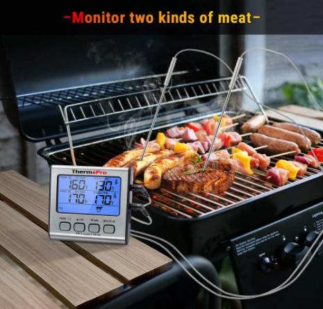

ThermoPro TP-17 Dual Probe Digital Cooking Meat Thermometer Large LCD
Backlight Food Grill Thermometer with Timer Mode for Smoker Kitchen Oven BBQ
About this item
- Set your desired food temp & HI/LOW temp range for your grill or smoker to know when to add more fuel! Smoker thermometer will flash and beep to remind you if the temperature ever goes out your set range; HI/LOW temp range alarm is specifically designed for usage with smokers, grills and BBQ
- DUAL probe grill thermometer makes it easy to monitor temperatures of two pieces of meat or grill temperature without swapping probes or using different devices! Includes USDA preset temperatures and can also adjust set temperature manually.
- Backlit and large LCD BBQ thermometer displays both food /oven to be placed anywhere within the kitchen or grill environments.